Pick one and the wallpaper, the watcher, the clock, the app icons, the layout of the row and the animations all change together. You can also change any part, mix your own, or describe one in words.
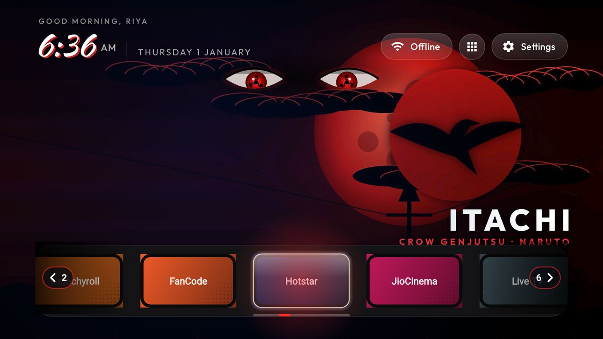
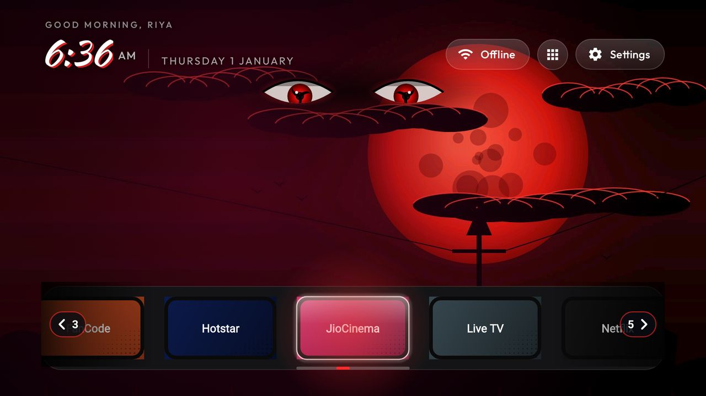
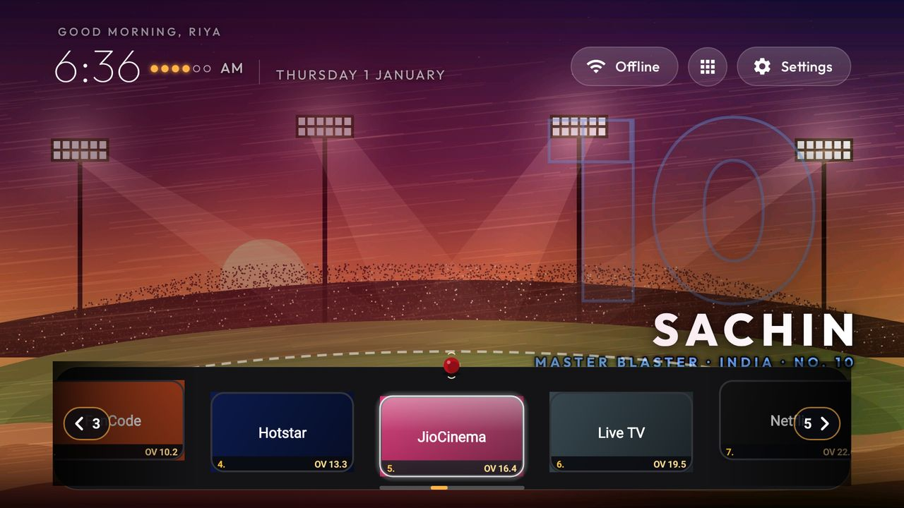
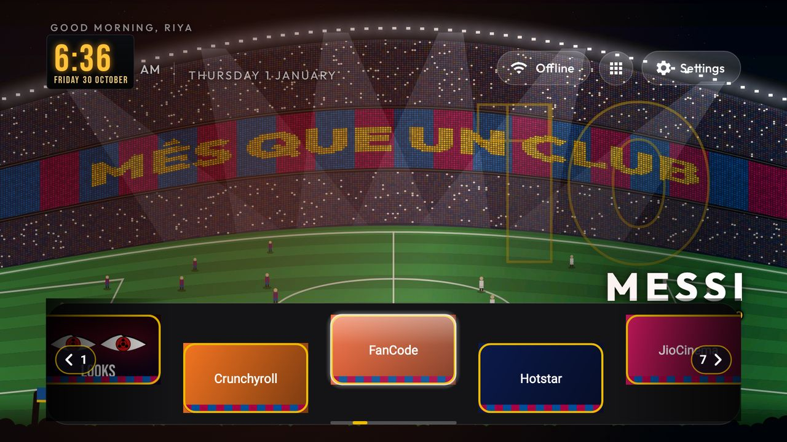
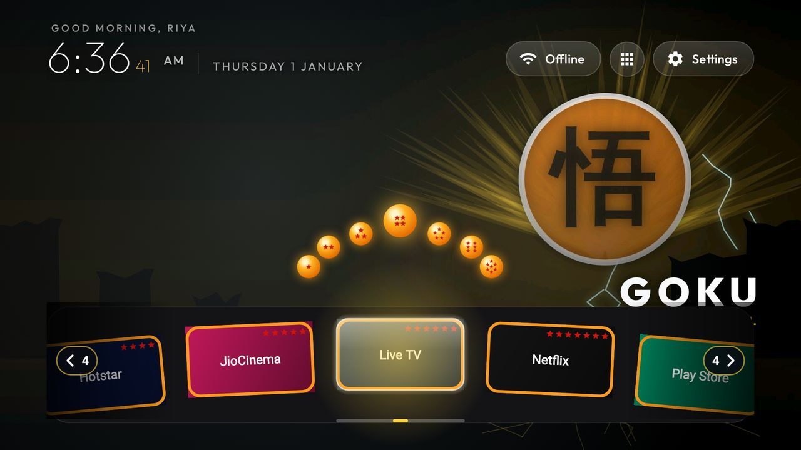
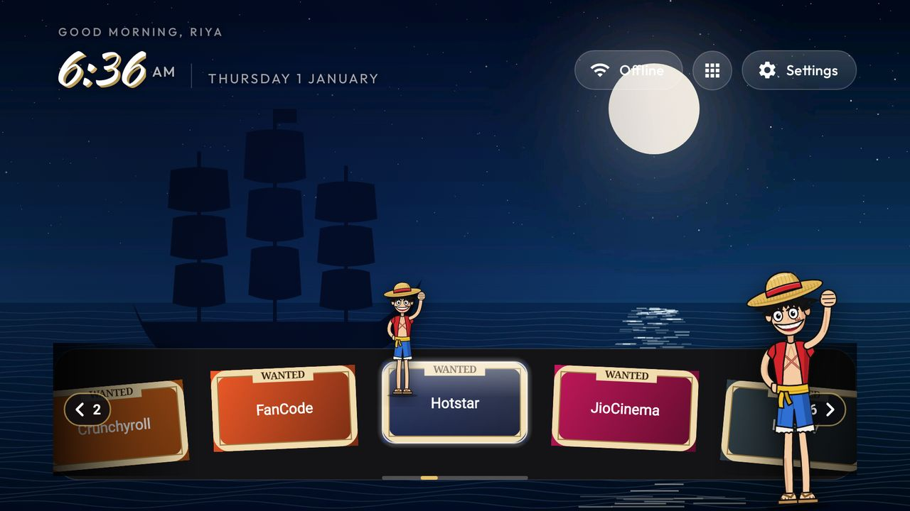
Rendered by den-tv's own screen tests with sample apps; on your TV the row shows your apps and their own pictures.
| Category | Looks include |
|---|---|
| Football | Camp Nou Nights, GOAT, Albiceleste, El Clásico Eve, Floodlights, Rocafonda 304, Wonderkid, Barça Wings |
| Cricket | Wankhede Roar, Hitman, King Kohli, Chase Master, Blue Billion, Master Blaster |
| One Piece | Straw Hat, Three-Sword Style, Navigator, Gear 5, Wanted, King of Hell, Lost Again, Fire Fist, ROOM, Black Leg, Hana Hana, Drum Island |
| Dragon Ball, Naruto, Demon Slayer, Jujutsu Kaisen and more anime | Super Saiyan, Ultra Instinct, Prince of Saiyans, Nine-Tails, Sage Mode, Copy Ninja, Crow Genjutsu, Avenger, Butterfly Mansion, Set Your Heart Ablaze, Water Breathing, Domain Expansion, King of Curses, Bankai, Arise, One Punch, Humanity's Strongest, Crimson Moon, Manga Panel, Anime Dusk |
| Heroes | Hero Wall (a new hero every few minutes), and a poster look for each hero |
| Outdoors and seasons | Trail Dawn, Sahyadri Monsoon, Diwali Night, Neon Tokyo |
| Together, geek and more | Seoul Nights, Bollywood Marquee, Geek HUD, Coder, and a few moody night looks |
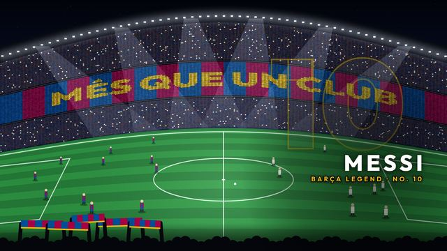
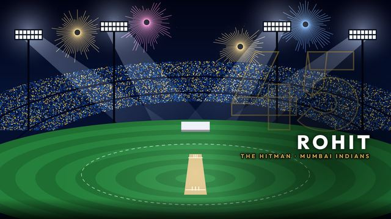
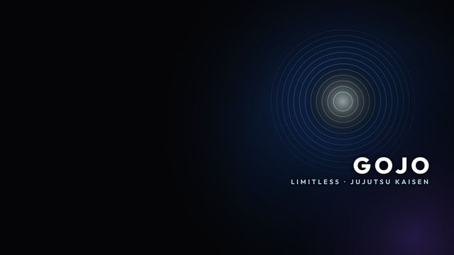
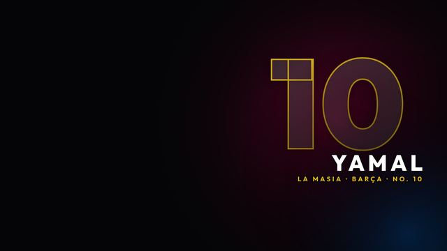
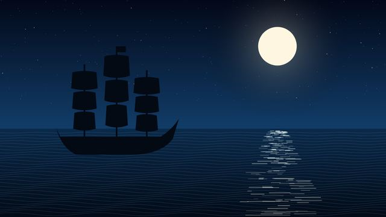
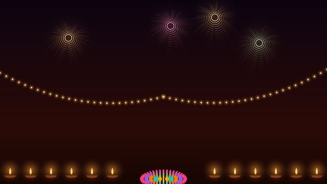
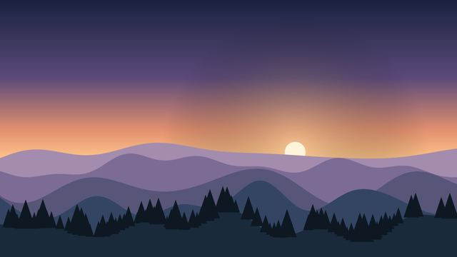
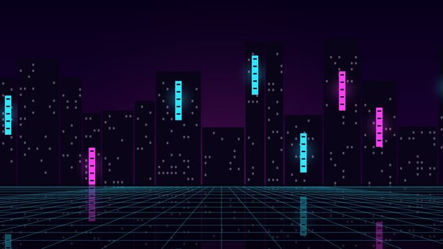
Every part comes from one shared library, so any look can borrow from any other. Change them on the phone in Tweak › This look.
| Part | What it does | Choices |
|---|---|---|
| Watcher | Follows the app you pick | 40+: Sharingan, Mangekyō, Rinnegan, Six Eyes, Super Saiyan eyes, Nine-Tails, the straw hat, Zoro's three swords, the Dragon Balls, crows, butterflies, walking Luffy, Gear 5, a cricket bat, a curling football and more |
| Clock | Replaces Home's clock | 13: thin, brush, scoreboard, split-flap, HUD, terminal, analogue, seconds ring, neon, CRT, rolling, overline, in words |
| App icons | A frame over each app's tile | 13: Wanted posters, Dragon Ball stars, manga ink, neon tubes, jersey patch, enamel pin, scorecard chip, pixel, glass, sticker, HUD brackets |
| Layout | Shapes the row of apps | A row, a football formation, a cricket field, an island route, a manga shelf, a carousel |
| Wake | Plays when the TV switches on | 15: bloom, HUD boot, terminal boot, CRT, sword slash, storm, Sharingan spin, ink, tunnel and more |
| Focus and extras | Movement around the row and over the wallpaper | Spotlight, a passed ball, ripples, an aura; flags, fireworks, petals, embers, confetti, rain, snow |
| Opening apps | How an app opens from its tile, and Home comes back | Icon zoom, portal, warp speed, sword slash, manga panels, shatter, ink wipe, camera flash |
| Moment | What plays for a big event | GOAL!, a six, a Kamehameha beam, shadow soldiers rising, one punch, Gear 5, a new episode |
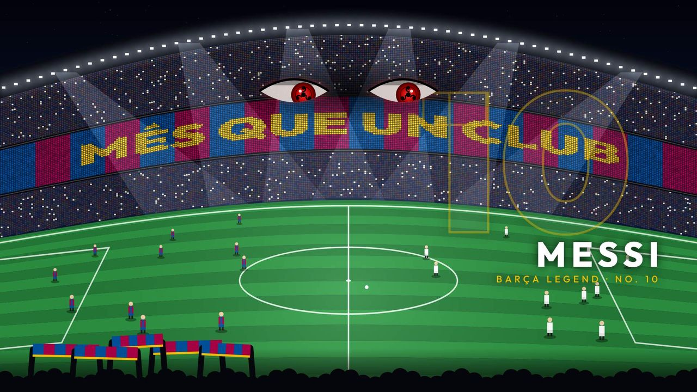
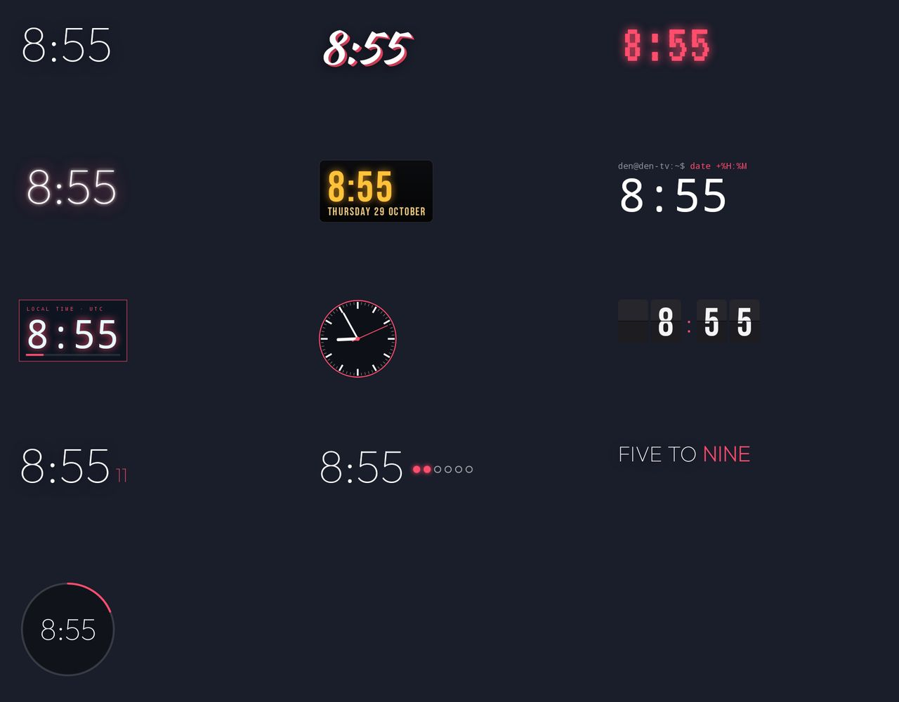
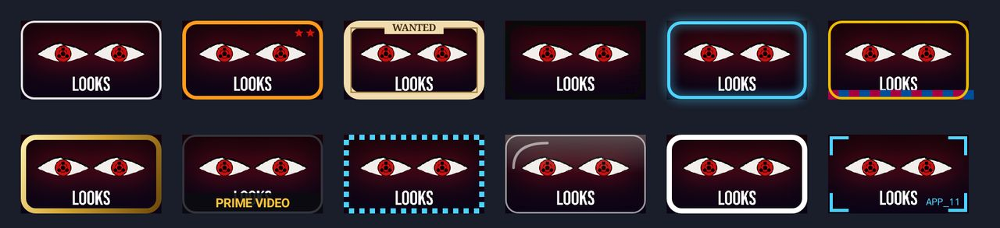
With live scores on, a goal for your team plays the look's celebration on Home, and so does every fifty runs. A new episode of a show you follow slides its card in. Moments play over whatever look is on.
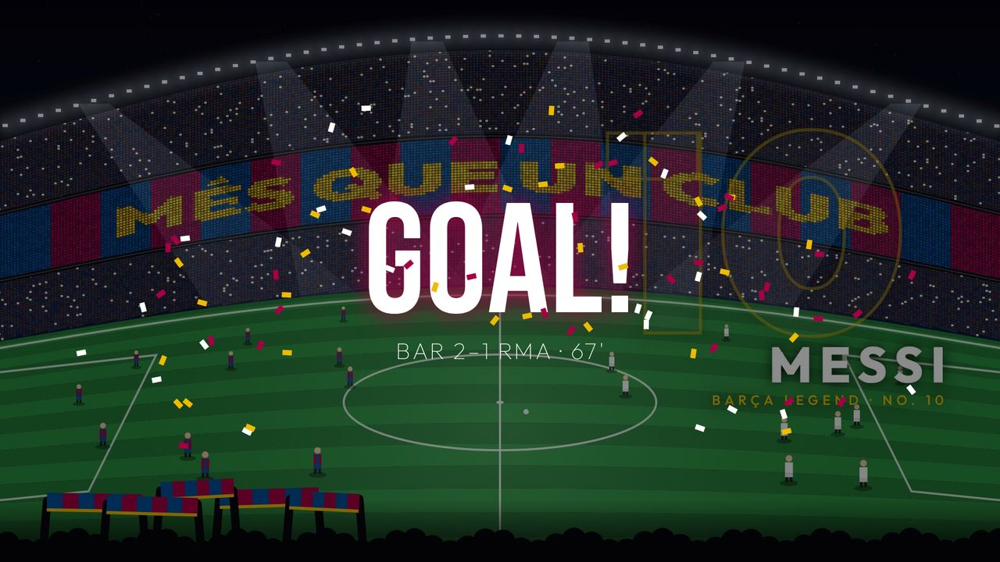
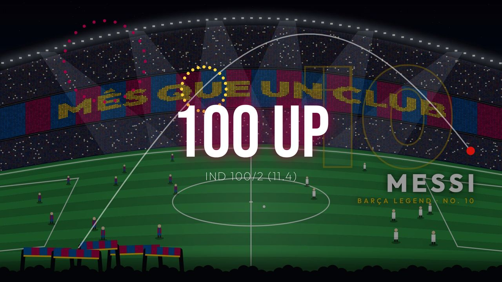
Live moments need the free football and cricket keys. You can try any moment from the phone: TV tab › Keys and live data › Try a moment on Home.
On the phone, Looks › Describe a look. Write what you want in a sentence: a player, a show, a place, a mood, colours.
What you type is sent to Google to answer it. Get a free Gemini key.
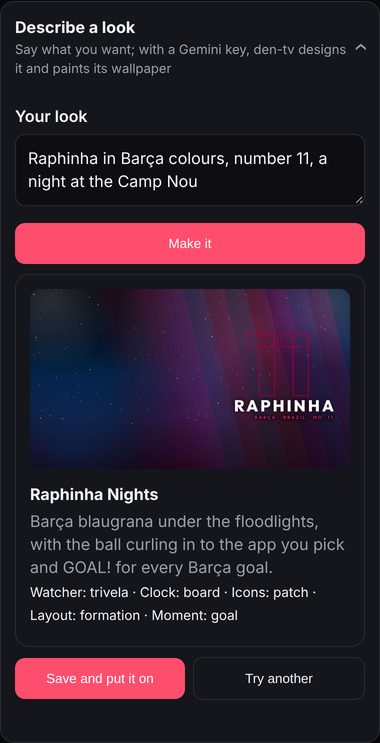
Tweak › This look: a different watcher, clock, icons, layout, wake or colour. It's saved with the look; Restore to default look undoes it.
Any look's wallpaper with your own parts. Up to 20, under My looks on the TV.
One of your photos as the wallpaper with any look's parts. It stays on the TV and never joins the rotation.
Upload a picture (a cut-out PNG works best) and it becomes a figure that leans toward the app you pick, or a small walker. Add one with eyes closed and it blinks.
Send one of your looks as a code, a QR code or a file, and import a friend's. Photo looks share without the photo.
Auto tab: Camp Nou on Barça match day, Wankhede during the IPL, Diwali Night for Diwali, a dawn trail on weekend mornings, or Surprise me every morning.
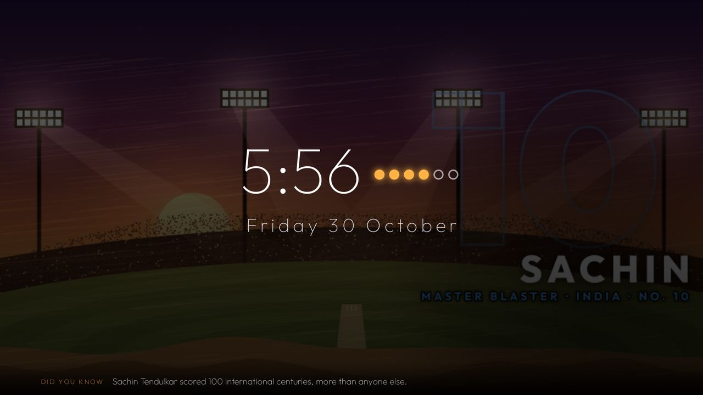